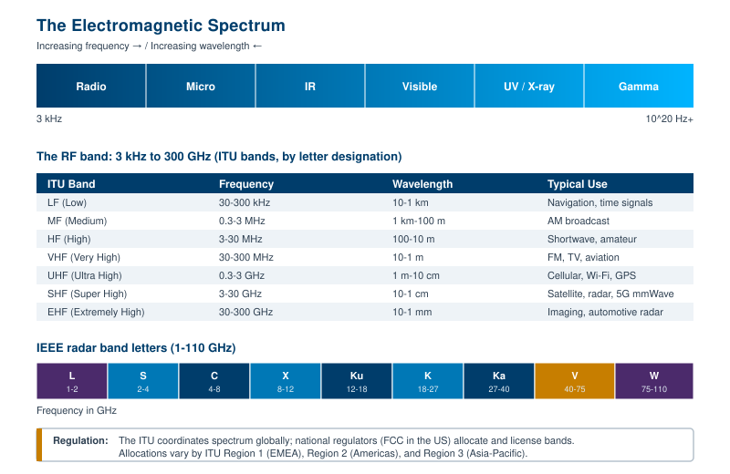
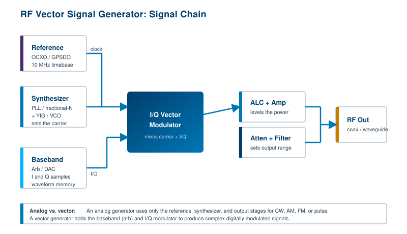

The previous chapters introduced the time and frequency domains and the language of RF. This chapter steps back to the physics underneath all of it. Electromagnetic radiation is the medium every radio signal rides on, and the spectrum is the shared, finite resource that every wireless service competes for. Once you understand how the spectrum is organized, named, and regulated, the rest of the book has a frame to hang on. The chapter then turns to the instruments that put signals onto that spectrum on purpose: signal generators.
Electromagnetic radiation is a form of energy carried by synchronized oscillating electric and magnetic fields. It is unusual among waves. Its behavior can be described by both wave theory and particle theory, and it needs no medium to travel. Ocean waves require water. Sound waves require air. Neither can cross a vacuum. Electromagnetic waves can, and in fact they move through the vacuum of space at the speed of light, roughly 3 x 10^8 meters per second.
A wave is described by its frequency of oscillation, and electromagnetic waves span an enormous range of frequencies. There are no known physical limits on the maximum or minimum frequency that can exist in nature, so the spectrum is, in principle, unbounded at both ends. What we call "the electromagnetic spectrum" is simply the full continuum of those frequencies, sorted from low to high.
Engineers group frequencies into bands based on shared physical behavior or shared applications. Some bands pass through the Earth's atmosphere with little loss. Some bounce off the ionosphere and travel beyond the horizon. Some are absorbed by water vapor or oxygen and are useful only over short distances. Two of the most familiar bands sit far apart on the continuum: visible light and radio.
Visible light is electromagnetic radiation with wavelengths from roughly 400 to 700 nanometers (1 nm is 1 x 10^-9 m). That corresponds to frequencies near 4.3 x 10^14 Hz to 7.5 x 10^14 Hz. By convention we describe light by wavelength rather than frequency, but it is the same phenomenon as a radio wave, only oscillating far faster.
Radio frequency, the subject of this book, occupies the low end of the spectrum. The RF band runs from a few kilohertz up to about 300 GHz. The International Telecommunication Union (ITU) formally defines radio waves as electromagnetic waves below 3000 GHz propagating without an artificial guide, and the practical RF and microwave region most instruments cover spans roughly 9 kHz to 110 GHz today. [1]

The RF band is useful across a remarkable range of industries:
Within the RF band, some frequencies are open to anyone within stated limits. These include the Citizens Band (CB), the Industrial, Scientific, and Medical (ISM) bands that carry Wi-Fi and Bluetooth, and other unlicensed allocations. Other frequencies are reserved for licensed use only: amateur (ham) radio, commercial AM and FM broadcast, and television each operate on channels that are allocated or rented to specific operators. Licensed broadcasters are monitored closely to ensure they stay within their assigned channel and meet content and transmission rules.
Not every device that radiates RF means to. Equipment built to transmit, such as an FM radio, a Wi-Fi router, or a wireless keyboard, is an intentional radiator. A great deal of other equipment, from switching power supplies to motor controllers to digital clocks, throws off RF energy as a side effect. These are unintentional radiators, and they are the primary source of electromagnetic interference (EMI).
EMI is, in effect, RF noise that carries no useful information and lands where it is not wanted. Some designs leak far less than others, but every manufacturer has to manage it. Governments set limits on how much a product may emit, and they enforce those limits, because uncontrolled emissions can disrupt safety-critical systems and crowd legitimate users off the air. Penalties for violating emissions rules can be severe. Chapter 11 covers EMI testing in detail; the point here is that the spectrum is a shared space, and keeping it usable is a regulated responsibility, not an option.
Two band-naming systems dominate RF work, and engineers switch between them constantly. The first is the ITU band system, which divides the spectrum into decade-wide slices and names each by a descriptive abbreviation. The second is the IEEE radar band system, which uses single letters and grew out of World War II radar secrecy.
The ITU bands are easy to remember because each one spans one decade of frequency:
The IEEE radar bands subdivide the microwave region with letters: L (1 to 2 GHz), S (2 to 4 GHz), C (4 to 8 GHz), X (8 to 12 GHz), Ku (12 to 18 GHz), K (18 to 27 GHz), Ka (27 to 40 GHz), V (40 to 75 GHz), and W (75 to 110 GHz). [2] These letters are everywhere in radar, satellite, and electronic-warfare work. When someone says a system runs at "X-band," they mean roughly 8 to 12 GHz. Note that the K band is split because water-vapor absorption peaks near 22 GHz, so designers tend to work just below it (Ku) or just above it (Ka) and avoid the lossy middle.
Spectrum is a managed resource, not a free-for-all. At the global level, the ITU, an agency of the United Nations, maintains the Radio Regulations and divides the world into three regions: Region 1 (Europe, Africa, the Middle East, and northern Asia), Region 2 (the Americas), and Region 3 (most of Asia and Oceania). Allocations can differ from region to region, which is why a band reserved for one service in Europe may carry a different service in the United States. The ITU coordinates international agreements at the World Radiocommunication Conferences, held roughly every four years. [3]
Within each country, a national regulator turns those international allocations into specific licenses and rules. In the United States, the Federal Communications Commission (FCC) regulates commercial and private spectrum, while the National Telecommunications and Information Administration (NTIA) manages federal government use. Elsewhere the equivalent bodies include Ofcom in the United Kingdom and the relevant national authorities across the EU. For RF engineers, the practical takeaways are simple. Know which band you are working in, know whether it is licensed or unlicensed, and know the emission limits that apply. Working inside a licensed or restricted band without authorization is both a technical and a legal problem.
Going Deeper - Why the K band has a hole in it
Atmospheric gases absorb RF energy at specific frequencies. Water vapor has a strong absorption line near 22.2 GHz, and oxygen absorbs heavily near 60 GHz. Radar and communication designers route around these peaks. They place links in Ku-band below the water line or in Ka-band above it, and they sometimes exploit the 60 GHz oxygen peak deliberately for short-range secure links, because the heavy absorption stops the signal from traveling far enough to be intercepted.
Frequency and wavelength are two views of the same wave, tied together by the speed of light. The relationship is one of the most-used equations in all of RF:
c = f x λ
where c is the speed of light (about 3 x 10^8 m/s in a vacuum), f is frequency in hertz, and λ (lambda) is wavelength in meters. A handy shortcut: wavelength in meters equals 300 divided by frequency in megahertz. So a 100 MHz FM signal has a wavelength of about 3 meters, a 2.4 GHz Wi-Fi signal about 12.5 centimeters, and a 28 GHz 5G signal about 1.1 centimeters. As frequency climbs, wavelength shrinks, and that single fact drives much of RF engineering. Antennas scale with wavelength, so higher frequencies allow smaller antennas and tighter beams, but they also travel shorter distances and are blocked more easily by walls, rain, and foliage.
Propagation behavior changes dramatically across the spectrum. Lower frequencies (LF, MF, HF) tend to follow the ground or bounce off the ionosphere, which lets them travel far beyond the horizon, which is why AM and shortwave can reach across continents. VHF and UHF mostly travel in straight lines (line of sight), with limited diffraction around obstacles. Microwave and millimeter-wave signals are almost purely line of sight, are strongly attenuated by rain and atmosphere, and rely on highly directional antennas. These differences are not academic. They decide where a band is useful, how far a link will reach, and how much power a system needs.
A few more concepts round out the foundation. Bandwidth is the span of frequencies a signal occupies; wider bandwidth carries more information but consumes more spectrum. Attenuation is the loss of signal strength as a wave travels through space or a cable. Filtering shapes which frequencies survive: a low-pass filter passes frequencies below a cutoff and rejects those above, a high-pass filter does the reverse, a band-pass filter passes a chosen band and rejects everything else, and a notch (band-stop) filter rejects a narrow band while passing everything else. Filters appear in nearly every RF instrument and product, and Chapter 2's discussion of components carries directly into the test setups described later in this book.
To test an RF system, you usually need a known, clean signal to feed into it. That is the job of a signal generator: a source that produces a controlled RF or microwave signal with settable frequency, power, and modulation. Generators are foundational to almost every RF test bench. They drive components, stimulate receivers, act as local-oscillator substitutes, and stand in for real-world transmitters during development and production.
The applications are broad. RF and microwave generators are used to test components, receivers, and complete systems across cellular communications, Wi-Fi, audio and video broadcast, satellite communication, and radar and electronic warfare. The instruments share most of their features and differ mainly in frequency reach. RF signal generators typically cover a few kilohertz up to about 6 GHz. Microwave signal generators extend much higher, often from below 1 MHz to at least 20 GHz, with high-end models reaching 40, 50, or 70 GHz at the coaxial output and into the hundreds of gigahertz when paired with external waveguide source modules. [4]
The terms overlap, and usage varies between vendors, but a working distinction helps. A signal generator generally gives you control over many parameters: frequency, output power, and one or more modulation types. A synthesizer, in the narrowest sense, is the frequency-generating engine, often with a smaller set of adjustable parameters, optimized for clean, precise, agile frequency output. In practice most modern bench instruments are signal generators built around a synthesizer core, and the marketing names blur the line. What matters on the bench is the specification list, not the label.

The key specifications to read on any generator are frequency range, frequency resolution and accuracy, output power range and level accuracy, phase noise (how clean the carrier is, close in and far out), spurious and harmonic content, and switching speed (how fast the source can hop from one frequency or level to the next). Phase noise deserves special attention. A generator with poor phase noise will mask the very impairments you are trying to measure in the device under test, so a good source is often the difference between seeing a problem and missing it.
Going Deeper - The reference clock sets everything
Every frequency a generator produces is derived from its internal reference, usually a 10 MHz oven-controlled crystal oscillator (OCXO) or, for the best accuracy, a GPS-disciplined oscillator (GPSDO). The synthesizer multiplies and divides this reference to land on the requested carrier, so the reference's stability directly limits the generator's accuracy. On a multi-instrument bench, engineers lock every instrument to a single shared 10 MHz reference so that the source, the analyzer, and any other equipment all agree on what "exactly 2.400000 GHz" means.
BNC in Practice - Matching a source to the task
Berkeley Nucleonics builds RF and microwave signal generators across this range, and the categories above (analog versus vector, RF versus microwave reach) are the right way to think about matching a source to a task. Specific model capabilities should be verified against the current datasheet before any purchase decision, since frequency reach, options, and performance figures change between product generations.
Older generators were analog. They produced a continuous-wave (CW) tone and applied simple analog modulation: amplitude modulation (AM), frequency modulation (FM), phase modulation, or pulse modulation. That is enough to test many components and to stand in for a basic transmitter. It is not enough to reproduce a modern digital signal.
A modern wireless signal, such as a 5G NR carrier, a Wi-Fi 6 frame, or a radar pulse train, is built from complex digital modulation. Its amplitude and phase change thousands or millions of times per second according to a coded scheme. Reproducing that requires a vector signal generator. The vector generator adds two stages to the analog chain. A baseband section, built around a digital-to-analog converter (DAC) and waveform memory, generates the in-phase (I) and quadrature (Q) sample streams that describe the signal mathematically. An I/Q modulator then mixes those baseband streams onto the carrier produced by the synthesizer. With I and Q control, the instrument can place the signal's vector anywhere in the amplitude-and-phase plane at every instant, which is exactly what digital modulation requires.
The most flexible version of this is the arbitrary waveform generator (AWG), or an arbitrary-capable vector source. Rather than being limited to built-in modulation types, an AWG plays back any waveform you can describe as a sequence of samples. You can load a captured real-world signal, a standards-compliant test waveform generated in software, or a deliberately distorted signal designed to stress a receiver. This is how engineers create realistic test conditions: a 5G uplink with specific channel conditions, a multi-emitter electronic-warfare scenario, a Wi-Fi signal with controlled impairments. The waveform is computed once, in software, and the generator reproduces it precisely and repeatably.
Several capabilities define the modern category. Wide modulation bandwidth lets the instrument reproduce the hundreds of megahertz a 5G or radar signal can occupy. Digital pre-distortion and built-in correction improve the fidelity of the output across that wide band. Fast frequency and level switching supports frequency-hopping and agile-radar emulation. And software ecosystems now generate standards-compliant waveforms (5G NR, Wi-Fi, GNSS, and more) that load directly into the instrument, so the engineer specifies a scenario rather than building a waveform sample by sample. [5]
The throughline from the analog generators of the first edition to today's vector and arbitrary sources is fidelity under complexity. The signals under test got wider, faster, and more intricate, so the sources had to follow. A clean, flexible, accurately specified generator remains the starting point of almost every RF measurement in this book.
Take it interactively. The quiz lives on its own page with hidden answers - write your attempt first (even four characters works), then reveal. Self-graded. About 10 minutes.
Or read the questions and answers inline below (preserved for print and offline use).
[1] International Telecommunication Union, "Radio Regulations" and ITU-R nomenclature for the frequency and wavelength bands. Verify current band definitions and the practical RF/microwave instrument coverage range before publication.
[2] IEEE Std 521, "Standard Letter Designations for Radar-Frequency Bands." Verify the exact band edge frequencies before publication.
[3] International Telecommunication Union, ITU Regions (1, 2, 3) and World Radiocommunication Conference process. Verify the current WRC cadence and the most recent conference outcomes before publication.
[4] Industry RF and microwave signal generator product surveys on coaxial frequency reach and waveguide source-module extension. Verify current maximum frequency figures before publication.
[5] Vendor application notes on vector and arbitrary waveform generation, modulation bandwidth, and standards-compliant waveform software (5G NR, Wi-Fi, GNSS). Verify current capability claims before publication.